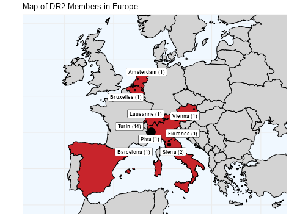
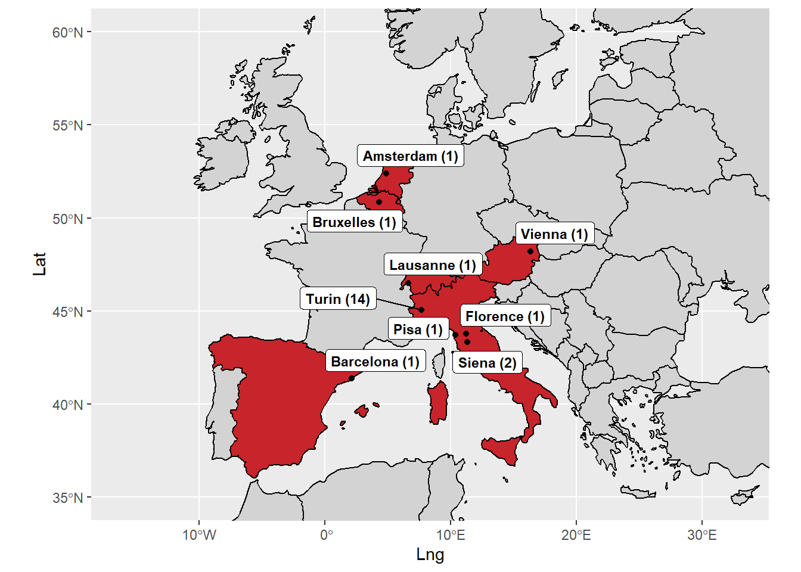

# install.packages(c("sf", "rnaturalearth" , "rnaturalearthdata", "rgeos", "ggspatial", "ggrepel", "tidyverse"))
# Ik heb een hekje geplaatst omdat ik deze pakketten al had binnengehaald. Heb je dat nog niet gedaan, dan moet je het hekje weghalen.
Inleiding
Hieronder een korte handleidingen die je leert om met R kaarten te maken. Euginio Petrovich schreef: Drawing maps with R. A basic tutorial in 2020. Hij laat je zien hoe je een kaart van Europa maakt met vooral de pakketten sfen `ggplot, hoe je geografische data combineert met een eenvoudige dataset en hoe je vervolgens deze kaart met deze gegevens verfijnt.Inderdaad een basishandleiding. Dank je Euginio.
Met R kaarten tekenen. Een basishandleiding
Met kaarten kun je op een krachtige wijze informatie visualiseren. Het plotten van gegevens op een kaart kan trends en patronen aan het licht brengen die moeilijk te zien zijn door alleen een spreadsheet te onderzoeken. Kaarten zijn ook zeer nuttig om informatie op een aantrekkelijke en makkelijkere manier over te brengen aan het publiek.
In deze korte handleiding leren we hoe we eenvoudige geografische kaarten kunnen genereren met R. In het bijzonder zullen we leren hoe we de volgende kaart van de DR2 leden in Europa kunnen maken:
Aan de slag
R is een gratis en open-source software die vele oplossingen biedt voor het berekenen van gegevens en het produceren van visualisaties. Een groot voordeel van R is dat de basisfunctionaliteiten kunnen worden uitgebreid met andere pakketten die vrij beschikbaar zijn op CRAN, het Comprehensive R Archive Network. Bovendien is er een actieve R-gemeenschap over de hele wereld die de meeste codeervragen beantwoordt die je kunt hebben.
De pakketten die nodig zijn voor deze handleiding kunnen worden geïnstalleerd met:
De eerste vijf pakketten zijn specifiek ontwikkeld voor kaarten: sf wordt gebruikt om ruimtelijke gegevens te beheren, rnaturalearth en rnaturalearthdata bevatten informatie over alle landen van de wereld, alsook informatie die nodig is om die landen op een kaart uit te zetten, en ggspatial verbetert de visualisatie van ruimtelijke gegevens. ggrepel helpt ons bij het beheer van de labels op de kaart, terwijl tidyverse een set R-bibliotheken omvat die de standaard zijn geworden voor gegevensmanipulatie en -visualisatie.
Na de installatie van de pakketten, moeten we ze laden:
library("sf")Warning: package 'sf' was built under R version 4.1.3Linking to GEOS 3.9.1, GDAL 3.2.1, PROJ 7.2.1; sf_use_s2() is TRUElibrary("rnaturalearth")Warning: package 'rnaturalearth' was built under R version 4.1.3library("rnaturalearthdata")Warning: package 'rnaturalearthdata' was built under R version 4.1.3library("rgeos")Warning: package 'rgeos' was built under R version 4.1.3Loading required package: spWarning: package 'sp' was built under R version 4.1.3rgeos version: 0.5-9, (SVN revision 684)
GEOS runtime version: 3.9.1-CAPI-1.14.2
Please note that rgeos will be retired by the end of 2023,
plan transition to sf functions using GEOS at your earliest convenience.
GEOS using OverlayNG
Linking to sp version: 1.4-6
Polygon checking: TRUE library("ggspatial")Warning: package 'ggspatial' was built under R version 4.1.3library("ggrepel")Loading required package: ggplot2Warning: package 'ggplot2' was built under R version 4.1.3library("tidyverse")Warning: package 'tidyverse' was built under R version 4.1.3-- Attaching packages --------------------------------------- tidyverse 1.3.1 --v tibble 3.1.7 v dplyr 1.0.9
v tidyr 1.2.0 v stringr 1.4.1
v readr 2.1.2 v forcats 0.5.1
v purrr 0.3.4 Warning: package 'tibble' was built under R version 4.1.3Warning: package 'tidyr' was built under R version 4.1.3Warning: package 'readr' was built under R version 4.1.3Warning: package 'dplyr' was built under R version 4.1.3Warning: package 'stringr' was built under R version 4.1.3-- Conflicts ------------------------------------------ tidyverse_conflicts() --
x dplyr::filter() masks stats::filter()
x dplyr::lag() masks stats::lag()Alvorens de kaarten te maken, moeten we de geografische gegevens in R importeren. Wij hebben ze opgeslagen in DR2_data, het volgende dataframe.
Zoals je kunt zien, zijn steden de basiseenheid van dit dataframe. Voor elk van hen hebben we het land opgegeven, het aantal leden (Members), het label dat we op de kaart zullen weergeven (het bestaat uit de naam van de stad plus het aantal leden tussen haakjes), en de breedtegraad en lengtegraad.
We importeren het dataframe, dat is opgeslagen in een CSV bestand, in R met de functie read.csv. Aangezien we een header met de namen van de kolommen hebben gebruikt, zetten we het argument header op TRUE. We moeten ook specificeren dat het scheidingsteken tussen de kolommen de puntkomma is en dat het decimaal scheidingsteken de komma is (en niet de punt, omdat er een Italiaanse versie van Excel is gebruikt om het bestand te produceren).
DR2_data <- read.csv(file="Dr2.CSV",
header=TRUE,
sep=";",
dec = ",")Je kunt de eerste records van het dataframe controleren met het commando head(DR2_data).
head(DR2_data) ï..ID City Country Members Label Lat Lng
1 1 Turin Italy 14 Turin (14) 45.07049 7.68682
2 2 Siena Italy 2 Siena (2) 43.31822 11.33064
3 3 Pisa Italy 1 Pisa (1) 43.70853 10.40360
4 4 Florence Italy 1 Florence (1) 43.77925 11.24626
5 5 Barcelona Spain 1 Barcelona (1) 41.38879 2.15899
6 6 Amsterdam Netherlands 1 Amsterdam (1) 52.37403 4.88969We zijn nu klaar om onze kaart te maken.
De wereldkaart maken
De eerste stap van onze kaartoefening is het creëren van een wereldkaart. Om dit te doen, gebruiken we de functie ne_countries om landengegevens op te halen uit rnaturalearth. We specificeren medium als scale en sf als returnclass van het dataframe, zodat de gegevens al in het juiste formaat zijn voor geografische kaarten maken.
world <- ne_countries(scale = "medium", returnclass = "sf")Wij plotten deze gegevens met ggplot2, het tidyversepakket voor visualisatie, en sf:
ggplot(data = world) +
geom_sf()Wij zullen de wereldkaart gebruiken als basiskaart waarop wij de landen waar DR2-leden gevestigd zijn, zullen markeren.
Om de DR2-landen op de kaart te markeren, moeten wij nu onze DR2-gegevens “toevoegen” aan het dataframe van de wereld. Wij doen dit met de functie left.join.
world_joined <- left_join(world, DR2_data, by = c("name" = "Country"))Deze functie vertelt R dat het de DR2-data moet verbinden met de worlddata door te zoeken naar een overeenkomst op de naam van het land (we specificeren de overeenkomstige sleutel tussen de twee gegevenssets in het by argument). Wanneer een overeenkomst wordt gevonden, worden de records uit de twee tabellen gecombineerd. Wanneer geen overeenkomst wordt gevonden, zoals in het geval van Brazilië, wordt de waarde van de DR2-kolommen (bv. “Leden”) van de niet-overeenkomende records op NA gezet, de standaardcode die door R wordt gebruikt voor ontbrekende waarden. Zo zal de record Brazilië NA krijgen als waarde van de kolom “Members”. Het is belangrijk om alle landen in de wereld te behouden en niet alleen die met DR2-leden. Anders zullen wij, wanneer wij onze gegevens op de kaart uitzetten, alle landen zonder DR2 verliezen! Daarom hebben we de left.join gebruikt in plaats van de simple join: we willen dat R alle records in de “linker” dataset behoudt (d.w.z. degene die het eerste argument in de functie bevat).
Wij willen nu de landen met DR2 leden op de wereldkaart markeren. Om dit te doen gebruiken we een if...else in het fill argument. Indien de waarde van de kolom “Members” null is (d.w.z. gelijk aan NA), stellen wij de kleur van het land in op grijs. Indien de waarde niet nul is, d.w.z. indien er DR2 leden zijn in dat land, stellen we de kleur in op rood. Merk op dat we in het eerste geval de kleurnaam hebben gebruikt, terwijl we in het tweede geval de hexadecimale kleurcode hebben gebruikt die overeenkomt met de kleur van het DR2-logo. Het argument kleur specificeert de kleur van de grenzen van de landen.
DR2_countries_map <- ggplot(data = world_joined)+
geom_sf(fill = ifelse(is.na(world_joined$Members), "lightgrey", "#c8242b"),
color = "black")De Europese landen waar DR2-leden gevestigd zijn, zijn te klein om op een wereldkaart op te vallen. De wereldschaal is dus niet erg effectief om de geografische spreiding van DR2 weer te geven. We moeten inzoomen op het niveau van Europa. Een zeer nuttig kenmerk van het sf-pakket is dat dit zeer gemakkelijk kan worden gedaan door een reeks coördinaten op te geven van het gebied waarin wij geïnteresseerd zijn:
DR2_countries_map +
coord_sf(xlim = c(-16.1, 32.88),
ylim = c(35, 60),
expand = TRUE)
Steden markeren (puntdata)
Wij weten dat DR2-leden niet alleen in bepaalde landen gevestigd zijn, maar ook in specifieke steden binnen die landen. In ons DR2-dataset hadden we de DR2-steden samen met hun geografische coördinaten. We willen deze steden nu als punten op onze kaart plaatsen.
We moeten eerst ons dataframe converteren naar een sf object:
sf_DR2_cities <- st_as_sf(DR2_data,
coords = c("Lng", "Lat"),
remove = FALSE,
crs = 4326,
agr = "constant")Merk op dat we de kolommen moesten aanduiden waarin de geografische coördinaten van onze steden zijn opgeslagen, evenals andere parameters zoals de gebruikte geografische projectie (hier WGS84, wat de CRS-code #4326 is).
We kunnen nu de punten van de steden op de kaart plotten:
DR2_countries_map +
geom_sf(data = sf_DR2_cities)Om ze duidelijk te zien, laten we inzoomen op Europa, zoals we eerder hebben geleerd:
DR2_countries_map +
geom_sf(data = sf_DR2_cities) +
coord_sf(xlim = c(-16.1, 32.88),
ylim = c(35, 60),
expand = TRUE)Labels toevoegen
Om de interpretatie van onze kaart te vergemakkelijken, is het zeer nuttig om enkele labels toe te voegen. Wij willen bijvoorbeeld weten hoeveel DR2-leden gevestigd zijn in de steden die wij eerder hebben aangegeven. We hebben de tekst van de labels al in de kolom “Label” van het DR2-datasetje. Nu moeten we deze tekst op de kaart visualiseren. We doen dit door gebruik te maken van de functie geom_label_repel. Deze functie, die is opgenomen in het pakket ggrepel, verbetert de positionering van labels op een plot: ze stoot labels van elkaar af, weg van datapunten, en weg van de randen van het plotgebied.
In de parameter esthetica van de functie specificeren we dat we de etiketten op de kaart willen plaatsen op basis van de breedte- en lengtegraad van de steden, en dat hun tekst wordt aangegeven in de kolom “Label”. De andere parameters specificeren de kleur van de labels, de grootte van de tekst, en de hoeveelheid “afstotingskracht” van het positioneringsalgoritme.
DR2_countries_map +
geom_sf(data = sf_DR2_cities) +
geom_label_repel(data = sf_DR2_cities,
aes(x = Lng, y = Lat, label = Label),
color = "black",
fontface = "bold",
size = 3,
force = 5)Warning: ggrepel: 9 unlabeled data points (too many overlaps). Consider
increasing max.overlapsEr is echter een probleem. Als we inzoomen op Europa, vinden we een “indringer”: het label “Montreal (1)” zou niet mogen verschijnen op de Europese kaart!
Om dit probleempje op te lossen, moeten we de steden in landen buiten Europa uitfilteren. We maken dus een deelverzameling van het DR2-datasetje en specificeren dat we alle records willen behouden waarvan het land niet ( != ) Canada is:
DR2_european_cities <- subset(DR2_data,
Country != "Canada",
select = City:Lng)
## Convert to the sf format
sf_DR2_european_cities <- st_as_sf(DR2_european_cities,
coords = c("Lng", "Lat"),
remove = FALSE,
crs = 4326,
agr = "constant")Als we de nieuwe dataset op de Europese kaart uitzetten, ontdekken we dat de indringer is verwijderd:
DR2_countries_map +
geom_sf(data = sf_DR2_european_cities) +
geom_label_repel(data = sf_DR2_european_cities,
aes(x = Lng, y = Lat, label = Label),
color = "black",
fontface = "bold",
size = 3,
force = 5)+
coord_sf(xlim = c(-16.1, 32.88),
ylim = c(35, 60),
expand = TRUE)
Het is duidelijk dat er redenen kunnen zijn om het label Montreal te behouden: bijvoorbeeld om aan te tonen dat DR2 ook overzeese leden heeft.
Verbetering van de kaart
In de tot nu toe gegenereerde versies van de kaart wordt de informatie over het aantal leden van DR2 in de labels weergegeven, als een getal tussen haakjes. Is het mogelijk om dit als een visueel kenmerk weer te geven, zodat het meteen in het oog springt? Een eerste idee zou kunnen zijn om de grootte van de labels evenredig met het aantal leden te veranderen:
DR2_countries_map +
geom_sf(data = sf_DR2_european_cities) +
geom_label_repel(data = sf_DR2_european_cities,
aes(x = Lng, y = Lat, label = Label, size = Members),
color = "black",
fontface = "bold",
force = 5)+
coord_sf(xlim = c(-16.1, 32.88),
ylim = c(35, 60),
expand = TRUE)Het resultaat is echter vrij slecht, vanwege het grote verschil in grootte tussen Turijn en de andere steden. Aangezien de meeste steden slechts één lid hebben, zijn hun labels te klein om leesbaar te zijn. Merk op dat R automatisch een legende toevoegt om de grootte van de labels te interpreteren.
Een betere oplossing is om de grootte van de stadspunten evenredig te laten zijn met het aantal leden:
DR2_countries_map +
geom_sf(data = sf_DR2_european_cities,
aes(size = Members))+
geom_label_repel(data = sf_DR2_european_cities,
aes(x = Lng, y = Lat, label = Label),
color = "black",
fontface = "bold",
size = 3,
force = 9)+
coord_sf(xlim = c(-16.1, 32.88),
ylim = c(35, 60),
expand = TRUE)Merk op dat R automatisch een legende creëert op basis van de grootte van de punten:
Op dezelfde manier kunnen we ook de kleur van de punten gebruiken om het aantal leden weer te geven. We passen de kleurenschaal aan door het uiterste in te stellen op blauw en groen, zodat de grote steden in blauw en de kleine steden in groen worden gekleurd:
DR2_countries_map +
geom_sf(data = sf_DR2_european_cities,
aes(color = Members, size = Members))+
scale_color_gradient(low = "blue", high = "green")+
geom_label_repel(data = sf_DR2_european_cities,
aes(x = Lng, y = Lat, label = Label),
color = "black",
fontface = "bold",
size = 3,
force = 9)+
coord_sf(xlim = c(-16.1, 32.88),
ylim = c(35, 60),
expand = TRUE)Merk op dat R een tweede legende toevoegt om de kleur van de punten te interpreteren:
De laatste kaart lijkt me echter “overbelast”. Dezelfde informatie (de DR2 leden) wordt op drie verschillende manieren gevisualiseerd: met een getal in het label, met de grootte van de punten, en met de kleur van de punten. Persoonlijk vind ik deze oplossing overbodig. Ik denk dat de tweede kaart het meest evenwichtig (en esthetisch het meest aangenaam) is.
Laatste accenten
Een groot voordeel van ggplot2 is dat het toelaat om bijna alle grafische aspecten van de visualisaties te controleren. Door de parameters in de thema-functie te wijzigen, kunnen we onze kaart verfijnen tot ze aan onze smaak beantwoordt. Om de uiteindelijke versie van de kaart te realiseren, veranderen we de kleur van de achtergrond van de kaart (dat is de oceaan) in lichtblauw, we verwijderen de titels van de assen, de teksten en de vinkjes en de legenda. Tenslotte voegen we een titel toe aan onze kaart.
European_DR2_map2 <- DR2_countries_map +
geom_sf(data = sf_DR2_european_cities,
aes(size = Members))+
geom_label_repel(data = sf_DR2_european_cities,
aes(x = Lng, y = Lat, label = Label),
color = "black",
fontface = "bold",
size = 3,
force = 12)+
coord_sf(xlim = c(-16.1, 32.88),
ylim = c(35, 60),
expand = TRUE)+
theme_minimal() +
theme(panel.background = element_rect(fill = "aliceblue"),
axis.title.x = element_blank(),
axis.title.y = element_blank(),
axis.text.x = element_blank(),
axis.text.y = element_blank(),
axis.ticks = element_blank(),
legend.position = "none") +
ggtitle("Map of DR2 Members in Europe")De laatste stap is het opslaan van de kaart in een geschikt formaat. We slaan zowel een PDF-versie van de kaart op, die de hoogste kwaliteit behoudt, als een lichtere PNG-versie:
ggsave("DR2_map_Europe.pdf")Saving 7 x 5 in imageggsave("DR2_map_Europe.png", dpi = "screen")Saving 7 x 5 in imageVerder lezen
Deze korte handleiding is grotendeels geïnspireerd door de tutorial die Euginio gebruikte om de basis van mapping met R te leren. Hij legt heel duidelijk verschillende andere onderwerpen uit die met maps te maken hebben en hij raadt deze zeker aan. Een andere nuttige tutorial is voor hem deze, die uitlegt hoe je een ander R-pakket voor kaarten, ggmap, gebruikt en een aantal veelvoorkomende data wrangling operaties.